Short case studies (screenshots + write-up). All visuals use public/synthetic or anonymised data — no proprietary info.
Executive KPI view + drilldown to explain drivers (mix/volume/variance) with consistent measure definitions.
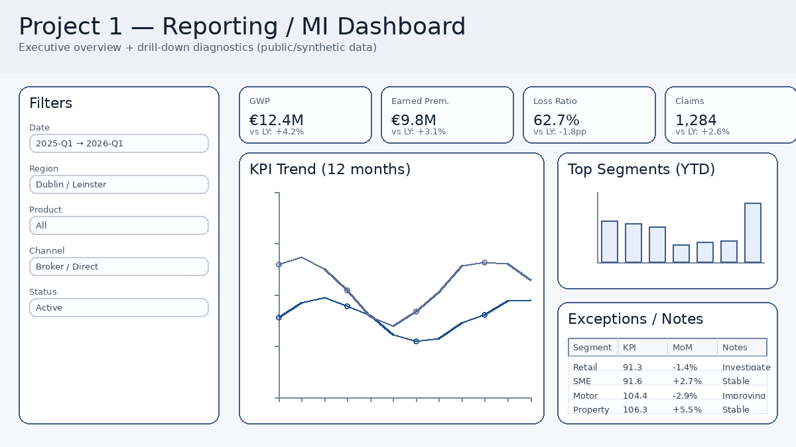
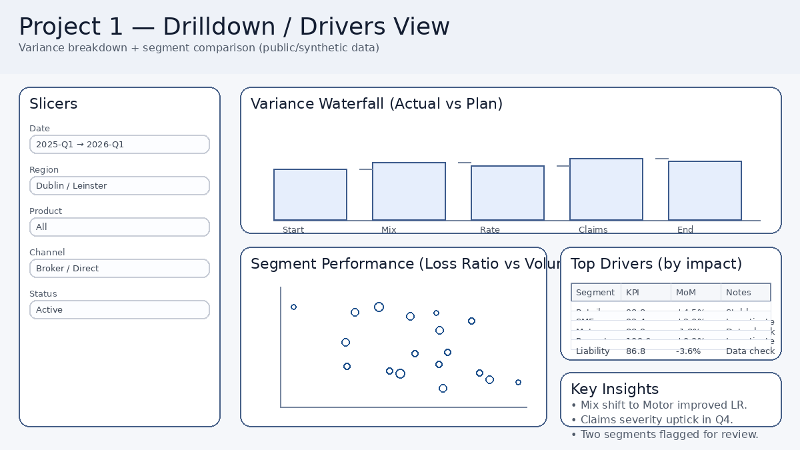
Replaces manual month-end reporting with a repeatable pipeline + KPI dictionary + exception flags.
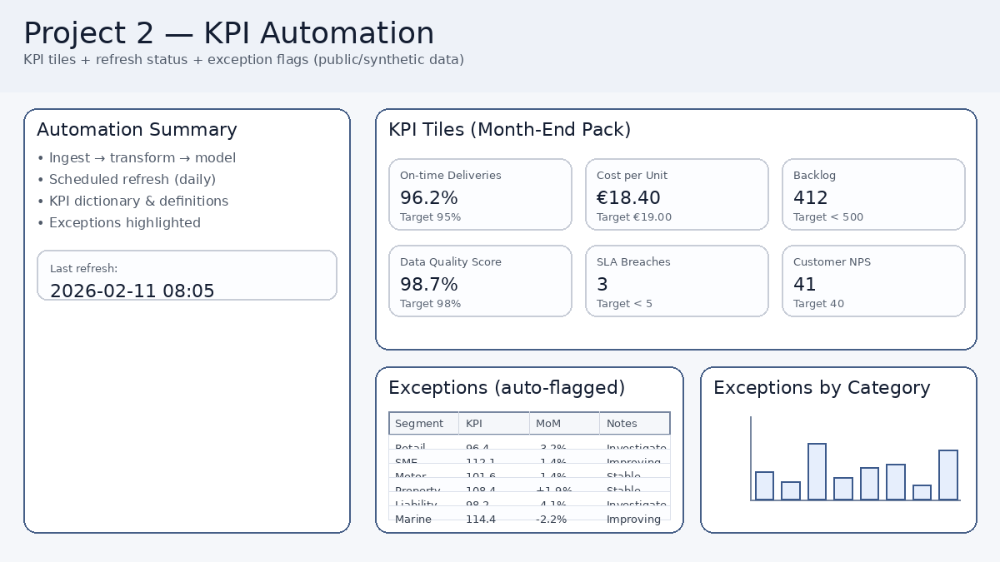
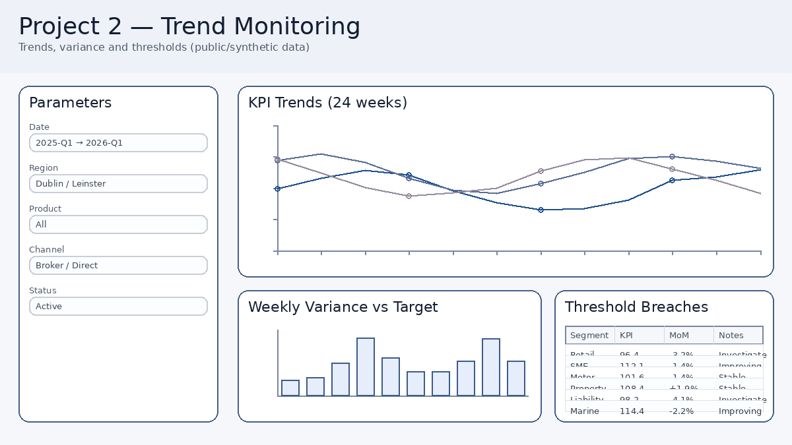
Targets vs actual, time-based progress, and drill-down insights — the same storytelling pattern as BI dashboards.
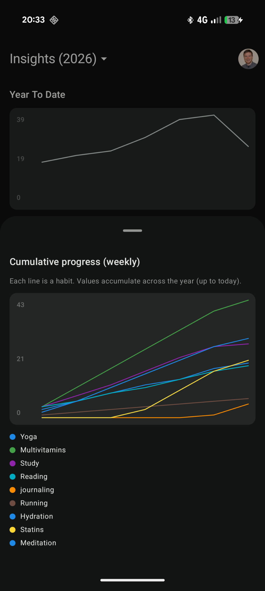
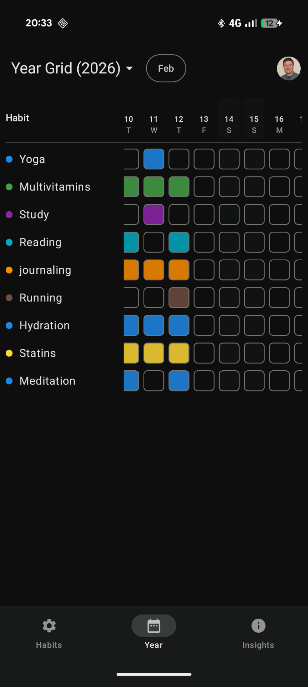
Turns forecasting into a decision tool: model comparison, holdout inspection, and interpretable metrics.
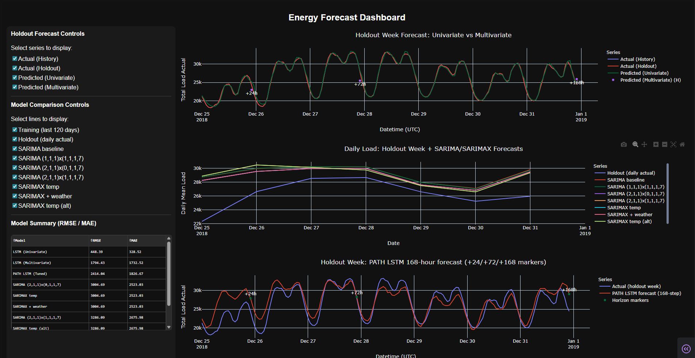
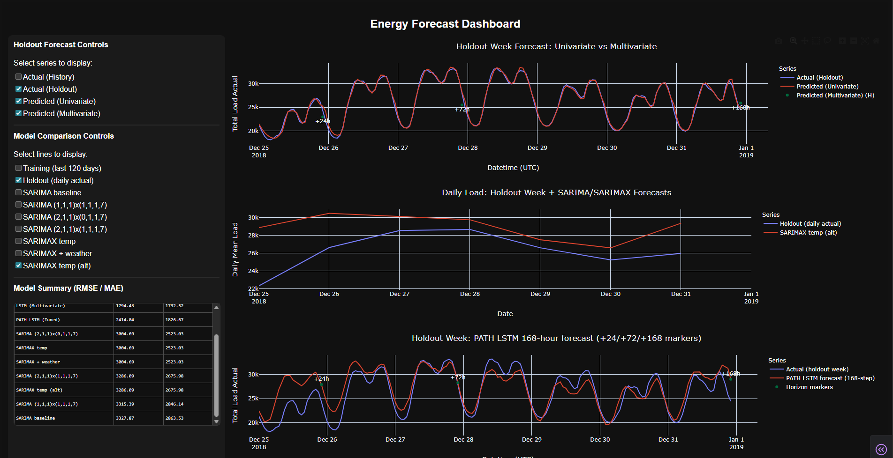
Single quarter filter drives KPIs, county map, and multiple chart views (bar/pie/line) — BI-style consistency.
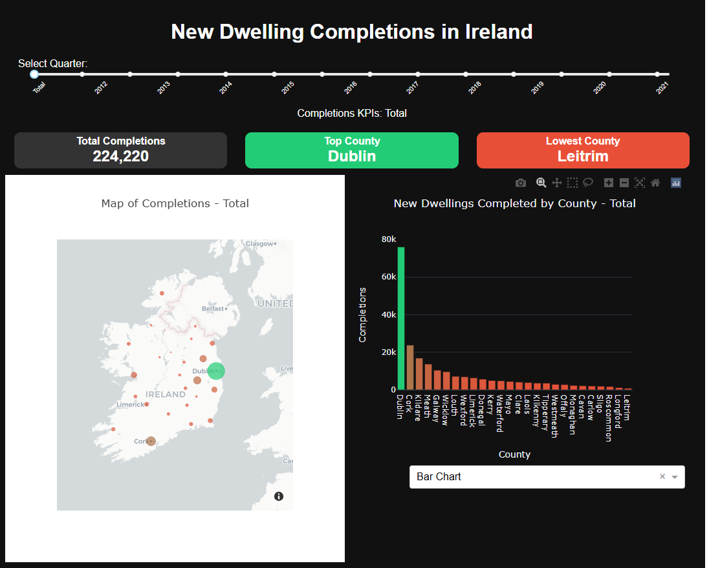
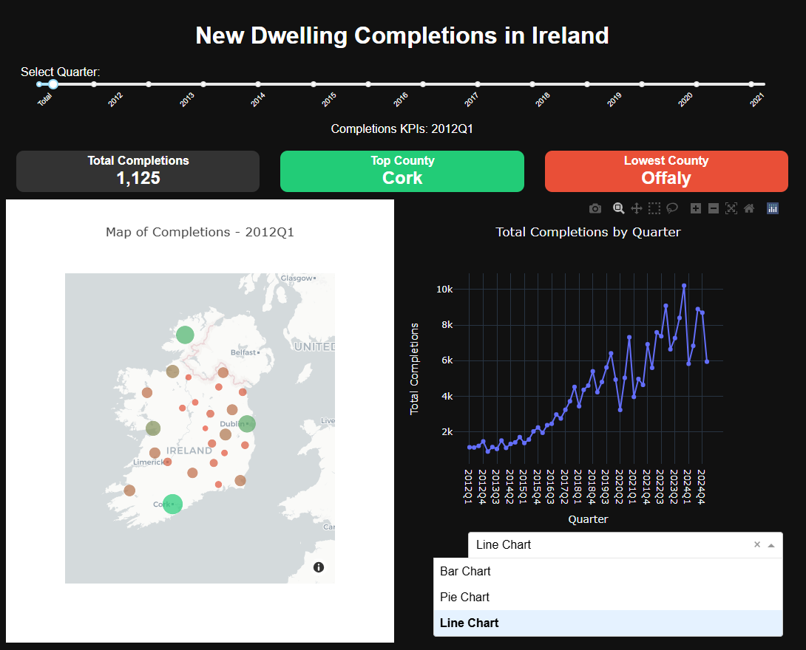
Operational “command centre” tracking volume + status across workflow activity, backed by a clean semantic layer.
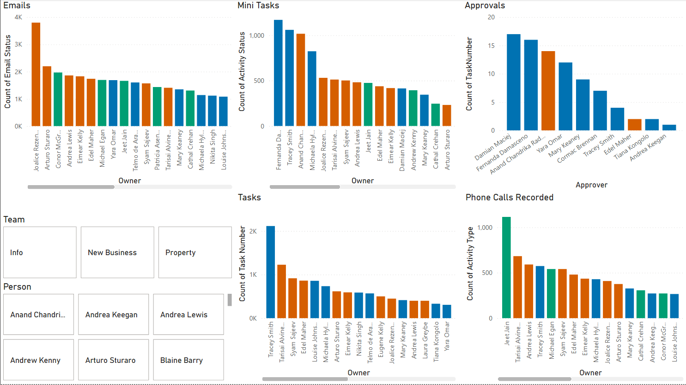
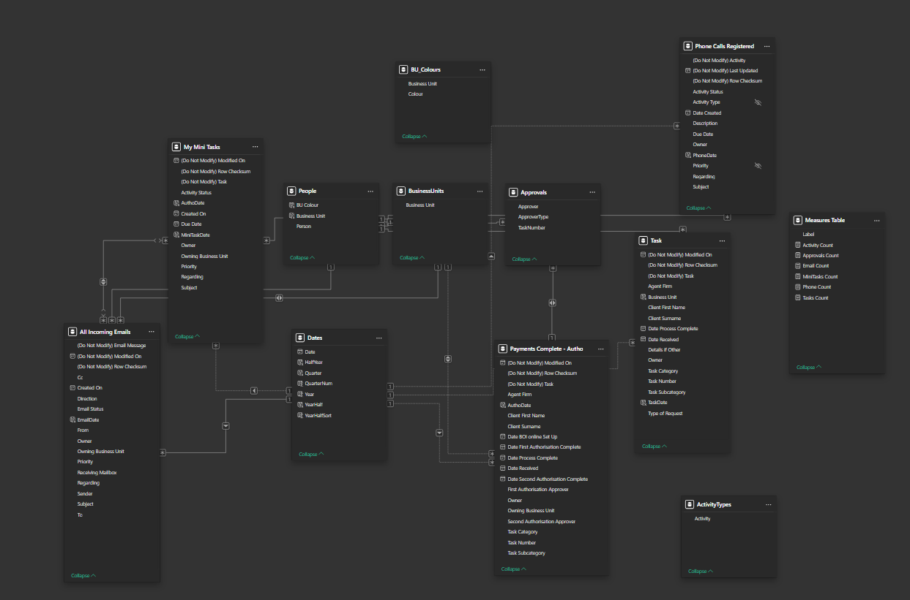
Pipeline KPIs, assets in vs expected, ageing analysis, and slicers for owner/consultant/firm — end-to-end BI monitoring.
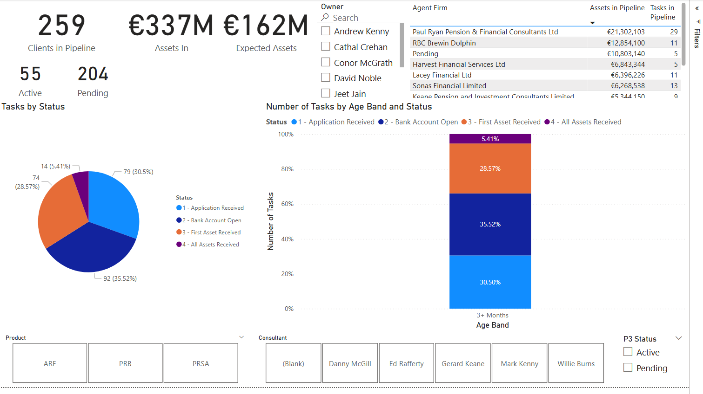
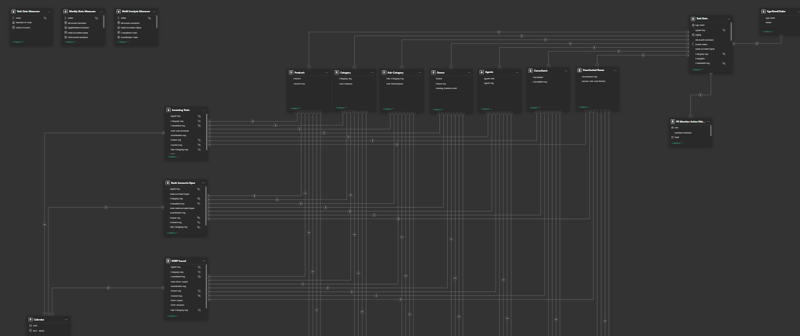
Matrix view that makes approval ownership and status instantly legible across categories/subcategories and approvers.
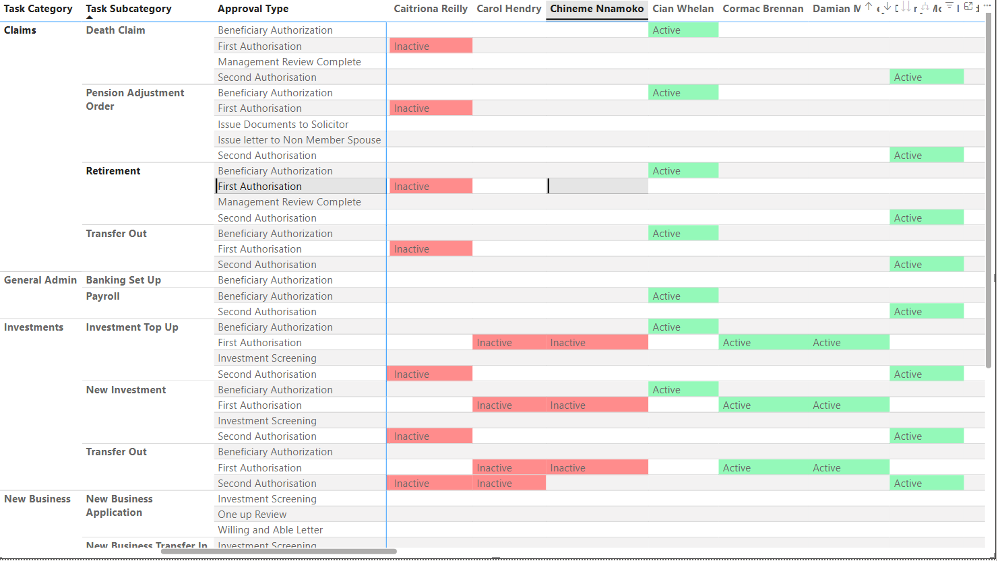